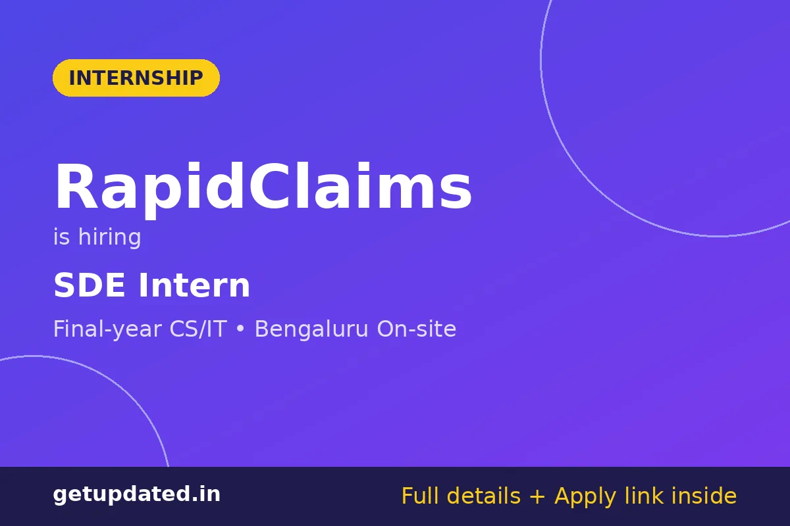

Duck Creek Technologies is hiring an Associate Software Engineer in Bengaluru for its AI engineering team (requisition ID REQID55234). The role is open to early-career engineers with 0-2 years of experience who want to work on LLM evaluation, knowledge graphs and Python-based GenAI pipelines.
The most important condition is a public GitHub profile with at least one substantive, original AI/LLM project. The official listing says applications without a working GitHub link showing original work will not be considered, so prepare this before you apply.
This guide covers the role, eligibility, how to apply, and how to prepare. Facts come from Duck Creek's official Workday careers listing.
Table of Contents
- Quick Highlights
- About Duck Creek Technologies
- Role Overview
- Eligibility Criteria
- What Counts as a Substantive Project
- Salary and Benefits
- Selection Process
- How to Apply
- Preparation Plan
- Likely Interview Topics
- Common Mistakes to Avoid
- Official Links and Final Checklist
- Final Takeaway
- Also Read
- FAQs
Quick Highlights
| Particular | Details |
|---|---|
| Company | Duck Creek Technologies |
| Role | Associate Software Engineer (AI engineering team) |
| Requisition ID | REQID55234 |
| Location | Bengaluru, India |
| Experience | 0-2 years |
| Qualification | B.Tech/M.Tech in AI/ML, or CS/IT with strong AI coursework or projects |
| Mandatory | Public GitHub profile with an original AI/LLM project |
| Salary | Not disclosed |
| Last date | Not disclosed |
No GitHub project, no shortlisting: build your proof of work first.
About Duck Creek Technologies
Duck Creek builds cloud-based software for the property and casualty (P&C) insurance industry. Its SaaS platform helps insurers manage policy administration, billing, claims and customer experience.
For a fresher, an insurance-technology product company offers real business problems for AI to solve. Documents, claims and policy data are text-heavy, which suits LLM and knowledge-graph work.
Role Overview
The Associate Software Engineer joins the AI engineering team. The work centres on building and improving LLM-based systems, especially checking whether AI-generated answers are correct and reliable, and representing extracted information as structured knowledge.
Expect to work with the following:
- LLM evaluation frameworks and correctness checks of generated outputs
- Knowledge graphs: entities and relationships
- Embeddings and Retrieval-Augmented Generation (RAG)
- Python-based GenAI pipelines
Work arrangement
Per the listing, the position may start remote and could later move to a hybrid arrangement. Confirm the details with the recruiter.

Eligibility Criteria
- B.Tech or M.Tech in AI/ML, or a CS/IT degree supported by strong AI coursework and projects.
- 0-2 years of experience, so freshers are welcome.
- Solid Python and data-structures skills.
- A maintained public GitHub profile with at least one original AI/LLM project.
- Good to have: familiarity with evaluation tools such as Ragas or DeepEval, and knowledge-graph tools.
The listing does not specify an eligible graduation batch. If you are close to the criteria, check your degree and project evidence honestly before applying.
What Counts as a Substantive Project
The company wants original work, not a copied tutorial. Strong examples include a RAG question-answering app over a real document set, a script that scores LLM answers against ground truth, or a small knowledge graph built from text with entity extraction.
Make your repo readable
Add a README with the problem statement, architecture, how to run it, and sample results. Include commit history that shows your own work, and a short note on how you measured accuracy.
Salary and Benefits
The official listing does not disclose the salary. Do not rely on unverified figures from third-party sites. Ask about compensation during the recruiter conversation.
Selection Process
Duck Creek has not published the stages on the listing. For similar AI engineering roles, a typical process includes resume and GitHub screening, a technical interview on Python and data structures, and a discussion of your AI project. Treat this as a likely pattern, not a confirmed process.
Expect interviewers to open your repository and ask why you made each design choice. Be ready to explain every line you committed.
How to Apply
- Open the official Workday careers listing through the link in the Official Links section below.
- Find Associate Software Engineer, REQID55234, Bengaluru.
- Create or log in to your Workday candidate account.
- Upload an updated resume with your GitHub link at the top.
- Fill in the application form accurately and submit.
- Save the confirmation email and watch your inbox, including spam.
Apply early
No closing date is published, and Workday postings can be removed once enough applications arrive. Apply as soon as your GitHub profile is ready.

Preparation Plan
Spend the first week on fundamentals: Python, arrays, hashing, strings, and basic trees and graphs. The listing explicitly names data structures.
In weeks two and three, study how embeddings and vector search work, build a small RAG pipeline, and learn how to evaluate it using retrieval and answer-quality metrics. Try Ragas or DeepEval on your own project.
In week four, learn knowledge-graph basics such as nodes, edges and triples, and practise explaining your project in two minutes.
Likely Interview Topics
- How a RAG pipeline works, and where it fails (poor retrieval, hallucination)
- How you would measure whether an LLM answer is correct
- Embeddings, similarity measures and chunking choices
- Knowledge graph vs relational database
- Python coding and data-structure problems
- A walkthrough of your GitHub project
Common Mistakes to Avoid
- Missing GitHub link: the listing says such applications are not considered.
- Submitting forked tutorial code as an original project.
- Listing LLM buzzwords on your resume that you cannot explain.
- Applying through unofficial or paid "referral" pages.
Never pay for a job
Duck Creek applications go through its official careers site. Do not pay anyone for a shortlist or interview slot.
Official Links and Final Checklist
Checklist before you apply:
- GitHub profile is public with a clear README.
- At least one original AI/LLM project is pinned.
- Resume lists the GitHub link.
- You can explain your project architecture and evaluation method.
Final Takeaway
This is a good opening for AI-focused freshers in Bengaluru because it asks for real skills: LLM evaluation, RAG, Python and knowledge graphs. The salary and closing date are not disclosed, so apply promptly through the official link in the Official Links section above.
If your GitHub is not ready, spend a few focused days on one solid project before applying. A well-documented repository is the strongest part of your application.
Also Read

Synopsys Hiring Formal Verification Intern 2026: 12-Month Internship in Bengaluru for ECE/EEE Students
Read now →
RapidClaims Hiring Freshers 2026: SDE Intern (6 Months, On-site Bengaluru)
Read now →
State Street Hiring Freshers: Technology Early Career Entry Program 2026, Bangalore
Read now →
Deltek Hiring Associate Software Engineer 2026: Remote Job in India for Freshers
Read now →Browse all latest jobs & updates →
FAQs
1. What is the role at Duck Creek?
Associate Software Engineer in the AI engineering team, working on LLM evaluation, knowledge graphs, embeddings, RAG and Python GenAI pipelines.
2. Can freshers apply?
Yes. The listing accepts 0-2 years of experience.
3. What qualification is needed?
A B.Tech or M.Tech in AI/ML, or a CS/IT degree backed by strong AI coursework or projects.
4. Is a GitHub profile mandatory?
Yes. A public GitHub profile with at least one original AI/LLM project is required, and applications without it will not be considered.
5. Where is the job located?
Bengaluru, India. The role may start remote and could move to a hybrid arrangement.
6. What is the salary?
The salary is not disclosed on the official listing.
7. What is the last date to apply?
No closing date is published, so apply early.
8. How do I apply?
Apply through Duck Creek's official Workday careers listing for REQID55234 and include your GitHub link in your resume.